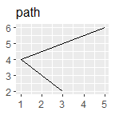

各位看客：
Learn-R 仍在写作流程中。本章节正在进行写作和结构调整，可能出现混乱或不完整的情况。
Learn-R 仍在写作流程中。本章节正在进行写作和结构调整，可能出现混乱或不完整的情况。
ggplot2(Wickham 2016)具有底层的图形语法，ggplot2: Elegant Graphics for Data Analysis重点解释了这套语法， 本章节为其学习笔记。
ggplot2具有颜色（color）、大小（size）、形状（shape）、填充（fill）等美学属性，适用于不同类型的图形。
在绘图美学中，少即是多，使用美学映射需要节制。与其用一幅非常复杂的图形一次展示所有，不如创造一些简单的情节，讲述一个故事，让读者的认识从无到有。
ggplot2的分层结构1使得我们可以以结构化的方式设计和构建图形。一般来说，图层有三个功能：
df <- data.frame(
x = c(3, 1, 5),
y = c(2, 4, 6),
label = c("a", "b", "c")
)
p <- ggplot(df, aes(x, y, label = label)) +
labs(x = NULL, y = NULL) +
theme(plot.title = element_text(size = 12))
p + geom_point() + ggtitle("point")
p + geom_text() + ggtitle("text")
p + geom_bar(stat = "identity") + ggtitle("bar")
p + geom_tile() + ggtitle("raster")
p + geom_line() + ggtitle("line")
p + geom_area() + ggtitle("area")
p + geom_path() + ggtitle("path")
p + geom_polygon() + ggtitle("polygon")




根据x轴是否连续和是否展示中间值，比较基本的有：
df <- data.frame(x = 1:3,
y = c(18, 11, 16),
se = c(1.2, .5, 1.0))
base <- ggplot(df, aes(x, y,
ymin = y - se,
ymax = y + se))
base + geom_crossbar()
base + geom_pointrange()
base + geom_smooth(stat = "identity")
base + geom_errorbar()
base + geom_linerange()
base + geom_ribbon()


# Unweighted
ggplot(midwest, aes(percwhite, percbelowpoverty)) +
geom_point()
# Weighted by population
ggplot(midwest, aes(percwhite, percbelowpoverty)) +
geom_point(aes(size = poptotal / 1e6)) +
scale_size_area("Population\n(millions)",
breaks = c(.5, 1, 2, 4))

和Photoshop的图层类似。↩︎